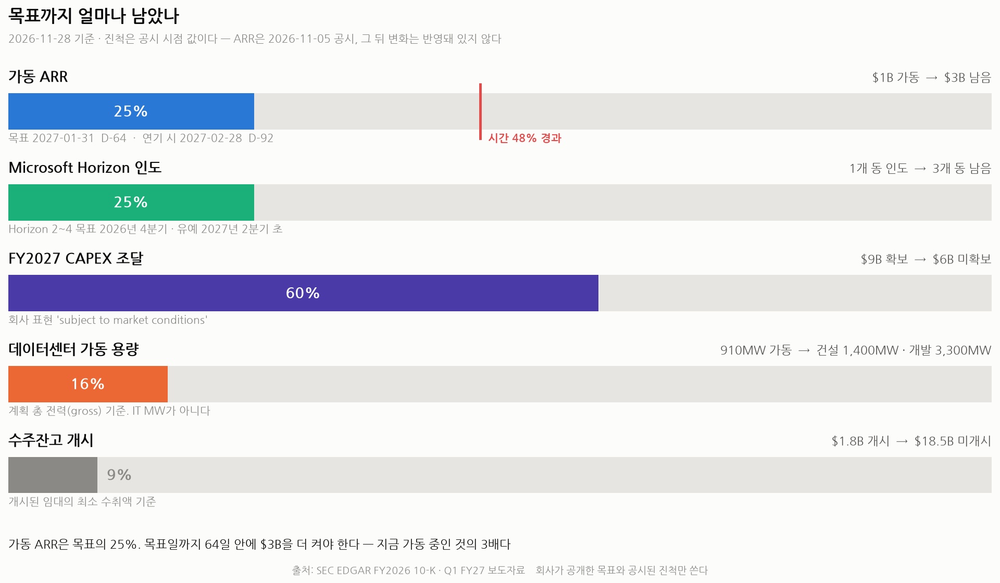
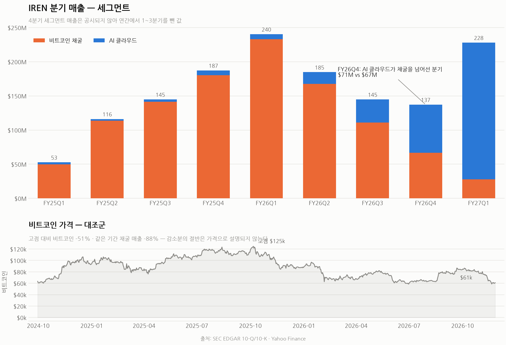
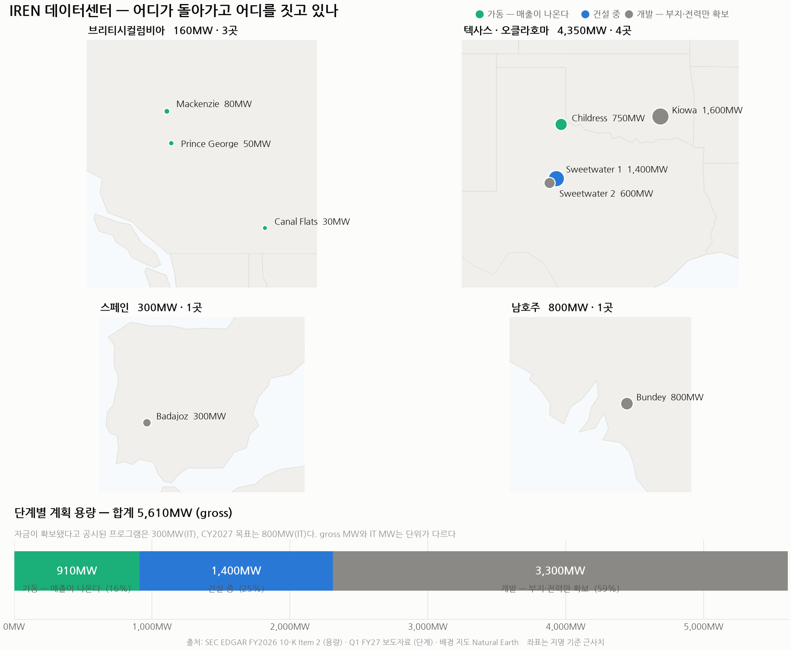
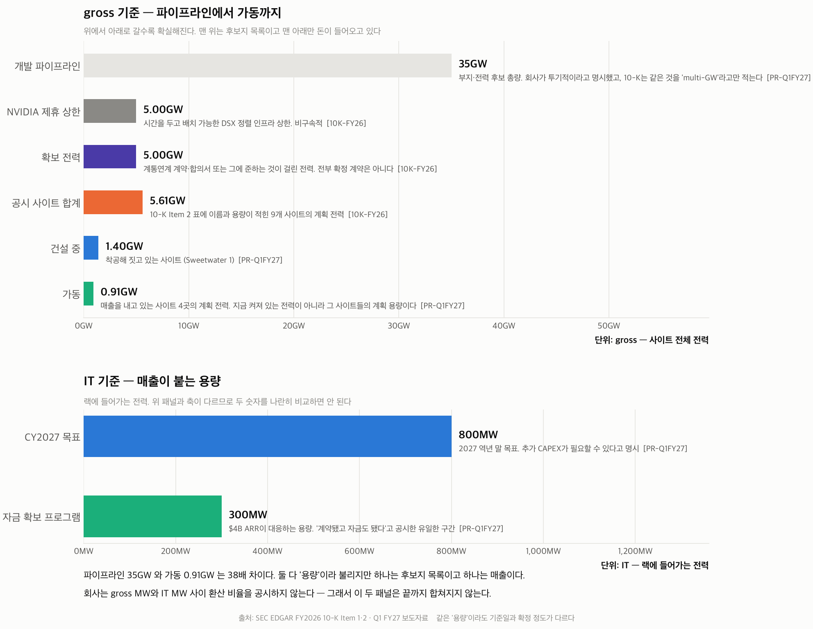
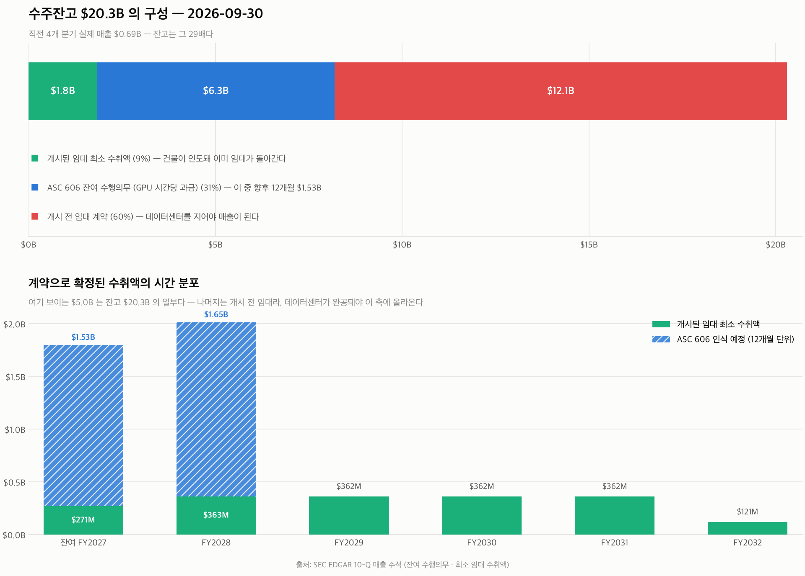
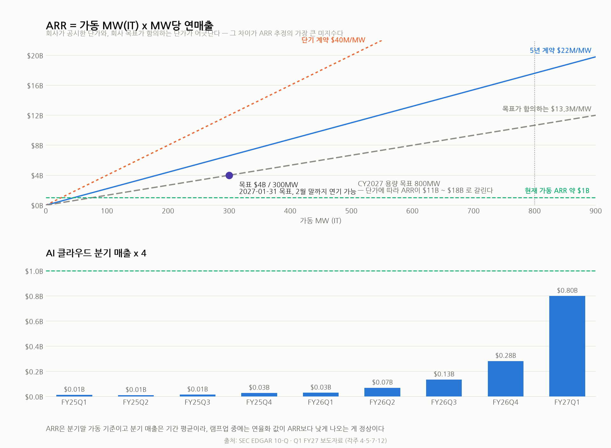
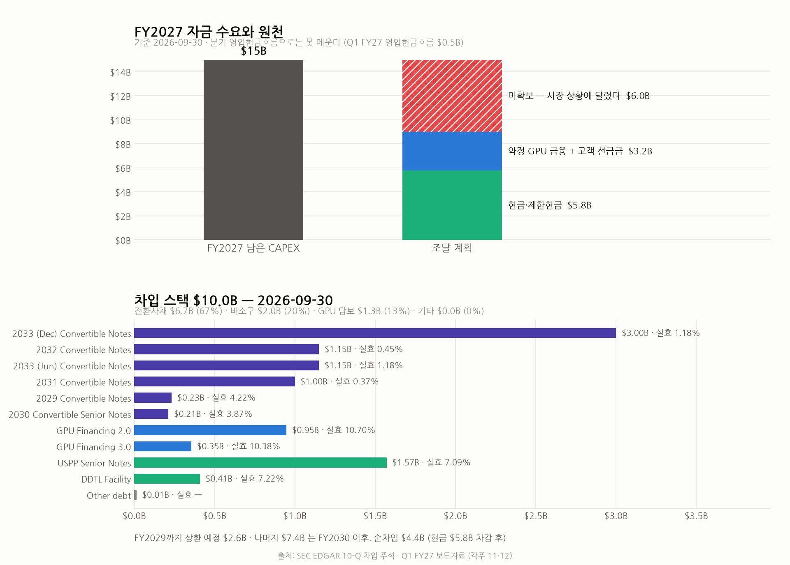
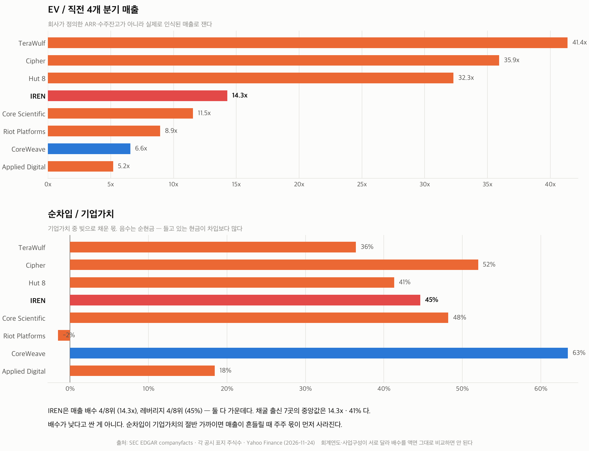
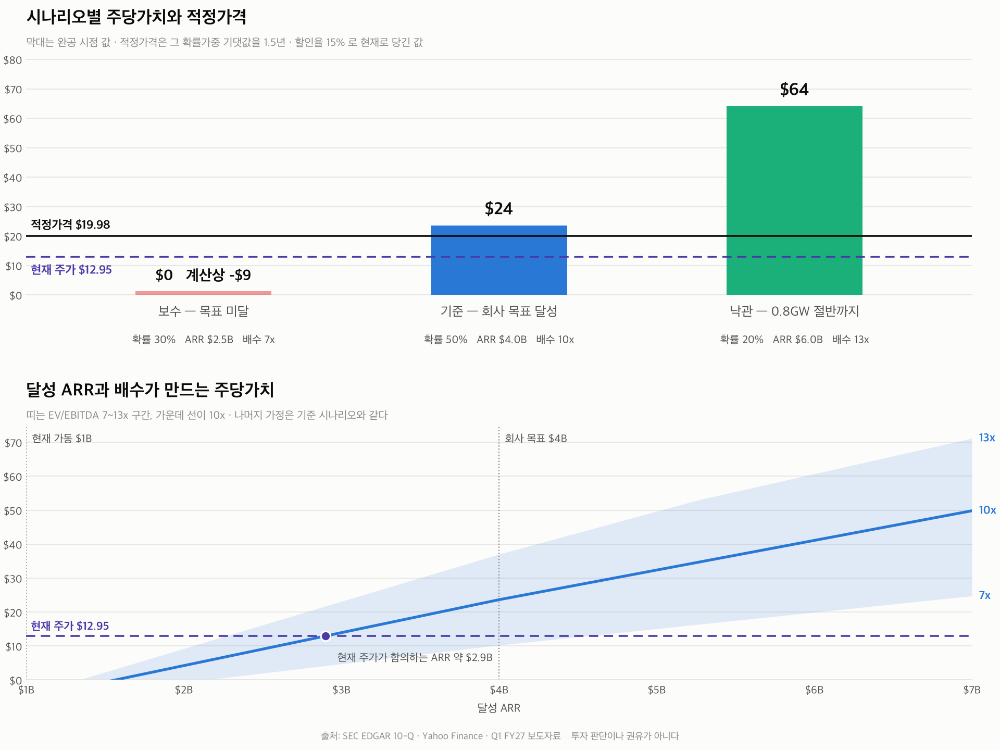

비트코인 채굴에서 AI 데이터센터로 옮겨 가는 회사를, 공시된 숫자로만 뜯어본다.
2026-11-26 02:43 UTC · 출처 SEC EDGAR · Yahoo Finance · 저장소
회사가 공개한 목표와 공시된 진척을 나란히 둔다. 가동 ARR은 목표의 25%, 시한까지의 시간은 46%가 지났다.

두 분기 만에 채굴이 사라지고 AI 클라우드가 매출의 88%가 됐다. 아래 패널의 비트코인 가격과 비교하면, 채굴 매출 감소분의 대부분은 가격이 아니라 스스로 전력을 돌린 결과다.

공시된 9개 사이트의 계획 총 전력은 5.6GW인데, 매출을 내고 있는 건 0.9GW(16%)뿐이다. 나머지는 짓는 중이거나 부지만 확보한 상태다.

35GW부터 0.3GW까지 전부 '용량'이라 불린다. 무엇이 후보지이고 무엇이 매출인지 갈라 두지 않으면 같은 회사가 5GW도 되고 0.9GW도 된다.

잔고의 60%는 아직 개시되지 않은 임대 계약이다. 계약은 됐지만 데이터센터를 지어야 매출이 된다.

회사 목표가 함의하는 단가와 실제 체결 단가가 60% 수준으로 어긋난다. ARR 추정의 가장 큰 미지수다.

차입 $10B 중 3분의 2가 전환사채다. 주가가 전환가에서 멀어지면 그냥 빚으로 남는다.

IREN은 매출 배수도 레버리지도 가운데다. 배수가 낮은 회사들은 대개 순차입이 거의 없어서, 액면 그대로 줄 세우면 안 된다.

세 결말에 확률을 붙여 기댓값을 내고, 완공까지 1.5년을 15%로 할인한 값이다. 레버리지가 높아 가정이 조금만 움직여도 결과가 크게 흔들린다.
